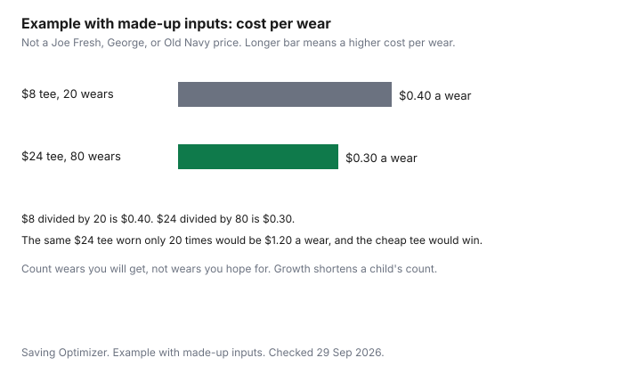

Clothing · Canada
Everyday Basics in Canada: Getting Value From Joe Fresh, George, Old Navy and Store Brands
Plain T-shirts, socks, and underwear are where a household either saves money or quietly replaces the same hole every month. A low ticket that fails in ten washes costs more than a mid-price shirt that lasts the season. A mid-price shirt that lives in a drawer costs more than both. This page is a cost-per-wear test for basics at Joe Fresh, George at Walmart, Old Navy, and store brands generally. It does not rank them. The longer version of the formula is the cost-per-wear guide.
Disclosure: Discounted retailer gift cards are an offer type. Saving Optimizer may earn a commission if a partner link is added later. No gift-card partnership is claimed. A gift card does not change a tag, a return window, or a points rule. Education only.
Key takeaways
- Budget basics make sense for high-wear, low-drama pieces: plain tees, socks, underwear. They make less sense when the care label says dry-clean or the fit is a one-time experiment.
- At 5 percent fibre or more, the label shows the generic name and the percentage, in French and English. Fabric weight counts only if it is printed.
- Cost per wear is price divided by wears you will get. The chart is an example with made-up inputs, not a brand test.
- The PC Optimum benefits table puts joefresh.ca with grocery banners and says that base earn varies by province. It does not print one national Joe Fresh rate. Every 10,000 points is like $10 where that rewards row applies.
- Old Navy's store page states a 30-day return. Joe Fresh and Walmart return windows are not cited here. See the retailer. This page does not rank brands.
Where budget basics make sense
A basic is a piece you expect to repeat: a crew-neck tee, a pair of socks, a plain brief or camisole, sometimes a cheap layer under a better shirt. Budget versions make sense when three things are true.
You will wear them often. The care is something you already do, usually a machine wash. And losing one is not a project. They make less sense as the shirt you need for a photograph, as anything labelled dry-clean only, or as a fit you have not tried on. Store brands and national basics banners sit in the same test. Joe Fresh, George, and Old Navy are examples of where Canadians buy that layer. They are not a podium.
Price the nearby alternative before you make a trip. A Costco clothing run has a membership in the math, which that guide keeps separate from the shirt. An outlet tee still has to pass the made-for-outlet test on the outlet guide. The monthly cap for all of this is the household clothing budget.
Fabric weight and seam checks
The Competition Bureau's textile nutshell, date modified 2022-01-19 and checked 29 Sep 2026, is the label law a basic has to meet. When a fibre is 5 percent or more of the mass, the label shows the generic name and the percentage of total fibre.
Those fibre words are in French and English. An example on the page is a body of 65 percent cotton and 35 percent polyester, with sleeves disclosed separately when they differ. Dealer identity is the name and mailing address or a CA number, and that part need not be bilingual. Quebec's additional rules are at the Office québécois de la langue française. A permanent label should stay legible through 10 cleanings. Shirts are in the permanent group. Socks and underwear may use a non-permanent tag, so do not treat a missing sewn-in label on a sock as the same failure as a blank tee.
Fabric weight is not on that list of required facts. If the hanger card prints grams per square metre, use it to compare two shirts in your hand. If it does not, compare thickness and stitch with your eyes. Pull the shoulder seam, the side seam, and the hem. A basic that is already puckering on the rack will not improve in the wash. Hold it to the light at the elbow area you are about to create. Thin cloth can still be the right buy for a summer layer you want to be light. It is the wrong buy if you need the shirt to hide a darker layer or to last a work week. Follow the care label. The habits that stretch a shirt's life, including how hot you wash and dry, are the garment-care guide.
Cost per wear on tees, socks and underwear
Cost per wear is the price you paid, divided by the number of times you wear the item before you discard it. A gift does not change the formula.
Use what you paid, which may be zero, and be honest about wears. Socks and underwear usually have more wears than a novelty tee and a shorter life than a coat. Count a wear as a day you actually put it on, not a day it sat clean.
Example with made-up inputs. A made-up cheap tee costs $8 and is worn 20 times, which is 40 cents a wear. A made-up mid-price tee costs $24 and is worn 80 times, which is 30 cents a wear. The mid-price tee wins that pair of assumptions. Change the wears and the winner changes. The same $24 tee worn 20 times is $1.20 a wear, and the $8 tee is the better buy. Nothing in those figures is a Joe Fresh price, a George price, or an Old Navy price. They are a worksheet. Write your own receipt on the same two lines.
| Made-up shirt | Price | Wears | Cost per wear |
|---|---|---|---|
| Cheap tee | $8 | 20 | $0.40 |
| Mid-price tee | $24 | 80 | $0.30 |
| Same mid-price tee, fewer wears | $24 | 20 | $1.20 |
Multipacks vs singles
A multipack lowers the price per piece only if you will wear the pieces. Example with made-up inputs.
Five tees at a made-up $20 are $4 each. Five singles at a made-up $6 are $30, or $6 each. The pack wins by $2 a shirt if all five are worn. If two of the five are a colour you never put on, you paid $20 for three shirts, about $6.67 each, and the singles you chose one by one were the better buy. Socks are the usual place a pack wins, because the pairs are identical and you will use them. Underwear is the same if the cut fits. A pack of graphic tees in colours you dislike is not a saving.
Check that every piece in the pack has a fibre disclosure you can read, even if the tag is non-permanent for socks and underwear. One swatch for the whole pack is not a substitute when the colours are different fabrics. And do not open a pack you might return until you know that store's rule on opened underwear and socks. That rule is not cited here for Joe Fresh or Walmart. See the retailer.
Returns and price adjustments
Old Navy's Bayshore store page, checked 29 Sep 2026, says free returns and exchanges within 30 days of delivery for online orders or of the purchase date in store, with final sale excluded. That is the Old Navy cell.
It is not a Joe Fresh cell and not a Walmart cell. This guide does not cite a Joe Fresh return window, a Walmart or George return window, or a price-adjustment window for any of the three. See the retailer. The map of how change-of-mind returns work in Canada is the return-policy guide. What a later price drop means, when a store publishes an adjustment, is the price-adjustment guide.
PC Optimum is a Joe Fresh question and not a George question. George's home is Walmart, which is outside that program. On Joe Fresh, the Program Benefits table checked 29 Sep 2026 puts joefresh.ca in the grocery group with banners such as Loblaw, No Frills, Real Canadian Superstore, Maxi, and Provigo. Base earn in the Shoppers column is 15 points per dollar on eligible products. The grocery cell, which is the Joe Fresh grouping on that table, says the rate varies by province. Do not copy the Shoppers 15 onto a Joe Fresh till. Every 10,000 points is like $10 of free stuff in the rewards row for Shoppers and for that grocery column. Gas redemption is marked not applicable on the table.
A separate document, the PC Optimum Insiders terms, says a program member earns 100 points per dollar on Joe Fresh branded products at Loblaw banners, Shoppers, Joe Fresh stores, and joefresh.com, and that those points are worth 10 percent of eligible purchases before tax when redeemed. Eligible purchases in those terms exclude gift cards. The Insiders page says new subscriptions are closed. If you are not already in it, the line that applies is the benefits table, not the 100-point rate. Points strategy beyond this cell is the PC Optimum guide. Card earn varies by card. This page does not rank cards.
| Check | Joe Fresh | George (Walmart) | Old Navy |
|---|---|---|---|
| Fibre content | Generic name and percent at 5 percent or more, French and English | Same textile rule | Same textile rule |
| Fabric weight | Only if printed. Not required on the label | Only if printed | Only if printed |
| Seams and hems | Pull them on the rack | Pull them on the rack | Pull them on the rack |
| Care label | Follow it, or the wear count is a guess | Follow it | Follow it |
| Return policy | See retailer | See retailer | 30 days. Final sale excluded |
| Loyalty earn | Benefits table: grocery column, varies by province. Not the Shoppers 15 | Not a PC Optimum banner | Rewards lookup exists. Earn rate: see retailer |

Sources & date stamps
- Competition Bureau, Labelling textile requirements in a nutshell, date modified 2022-01-19, checked 29 Sep 2026. Fibre at 5 percent or more. Bilingual fibre information. Permanent labels through 10 cleanings for shirts. Non-permanent tags allowed for hosiery and underwear.
- PC Optimum Program Benefits table, pcoptimum.ca, checked 29 Sep 2026. Shoppers base 15 points per dollar. Grocery column, including joefresh.ca, varies by province. Every 10,000 points is like $10 where that rewards row applies.
- PC Optimum Insiders terms, checked 29 Sep 2026. 100 points per dollar on Joe Fresh branded products, described as worth 10 percent before tax when redeemed. Gift cards excluded. The Insiders subscription page says new subscriptions are closed.
- Old Navy Canada store page, Bayshore, Ottawa, checked 29 Sep 2026. Returns within 30 days. Final sale excluded. Joe Fresh and Walmart return windows are not cited. See the retailer.
Frequently asked questions
Are Joe Fresh and George basics good value?
They are good value when the cost per wear is low: a sound seam, a fibre label you can live with, and enough wears before the shirt is discarded. A low ticket that pills or splits is not the cheap option. This page does not rank Joe Fresh, George, Old Navy, or any store brand. Use the checklist on one shirt from the rack you are standing in.
Do I earn PC Optimum points on Joe Fresh?
The PC Optimum benefits table, checked 29 Sep 2026, groups joefresh.ca with grocery banners such as Loblaw and Real Canadian Superstore, and that base-earn cell says the rate varies by province. It does not print one national Joe Fresh number. Every 10,000 points is like $10 of free stuff where the rewards row has a check, including that grocery column. A closed Insiders subscription, for people already in it, describes 100 points per dollar on Joe Fresh branded products, worth 10 percent when redeemed, before tax. New sign-ups to that subscription are closed on the Insiders page. Card earn varies.
What makes a basic T-shirt last?
A fibre content you can wash the way you actually wash, seams that do not pull open, a hem that is not a single loose thread, and a care label you follow. The textile page requires the fibre disclosure. It does not require a fabric weight, so weight matters only when the brand prints it. Cold-water habits and how you dry the shirt are on the garment-care guide. Nothing here is a lab score.
Is it worth paying more for basics?
Only when the extra dollars buy more wears, or a fit you will actually put on. Divide price by wears. The chart uses made-up inputs: an $8 shirt worn 20 times is 40 cents a wear, and a $24 shirt worn 80 times is 30 cents. If the expensive shirt is worn 20 times, it is $1.20 a wear and the cheap one wins. There is no universal better brand.
Where do basics fit in a capsule wardrobe?
They are the layer you repeat, so a small set of colours that combine with your work and weekend pieces beats a drawer of one-off graphics. The business-casual guide counts outfits from a short list of pieces. The household clothing budget is a monthly line, not a haul. Replace a basic when it fails the seam check, not when a new colour arrives.
Researched and drafted with AI assistance and fact-checked against official Canadian sources. How we create content.